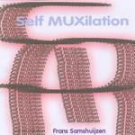

| Artist: | Frans Samshuijzen |
| Title: | SelfMUXilation |
| Label: | Polumnia P023 |
| Length(s): | 54 minutes |
| Year(s) of release: | 2004 |
| Month of review: | [04/2006] |
| 1) | Simple | 2.52 |
| 2) | Walk True | 4.12 |
| 3) | AltShift | 3.28 |
| 4) | Nova Nova Zembla | 6.56 |
| 5) | Piano Winti | 5.20 |
| 6) | Record Nothing | 1.45 |
| 7) | The Sleeping Fox | 4.13 |
| 8) | Nr485144 | 0.11 |
| 9) | Fear Facts 5 | 4.16 |
| 10) | Nervous Wreck | 3.36 |
| 11) | Klass (With Heiden Theme) | 7.10 |
| 12) | Final NZ | 2.55 |
| 13) | Number Eleven | 4.33 |
| 14) | Oude Tijd | 2.02 |
AltShift is a marching rhythm of a kind. I can liken this type of music to the likes of Brian Hirsch: quite mechanical and SF-ish. The sequencers dribble, and stutter, but the melody is not forgotten here. Nova Nova Zembla brings us to somewhat formless tone poem style experiments. The song is more a sound sculpture than that it has any recognizable melody. Piano Winti has piano and a rhythm box. The playing is light and rhythmic. I also wonder whether this is an actual piano here, it is played so fast. At the end other, fluting, sounds come in.
Record Nothing sounds like the revolving of wheels and the like that are desperate for some oil. The Sleeping Fox is dark ambient with estranging vocal samples. nr485144 does not seem to contain any sounds and is only eleven seconds long.
Fear Facts 5 opens with effects, but soon we run into what seems like the opening of a progmetal track. Heavy pounding drums, and something akin to guitars coming on. It does not stray much from this. Nervous Wreck is indeed a nervous tune, frantic even in places. The sequencers bobble, while occasional higher pitched sounds are interjected. This is more typical of the avant-garde found on the Cuneiform label, but it is very electronic, which is not so usual for that label.
Klass (With Heiden Theme) opens in classical style. This is also the longest tune on the album. The violins are played on keyboards, obviously, and Samshuijzen does not make the mistake to sound too much like violins. He simply offers a different take with the 'necessary' warblings. Later on, the effects are more discordant with the music.
Final NZ is a very softly recorded song. Being in a train when I write my reviews I had to put it really loud to hear the fluting sounds. Number Eleven is a funky track, with elements of Art Of Noise. Oude Tijd is Dutch for 'old time', and is a funny little track with all kinds of piped noises.